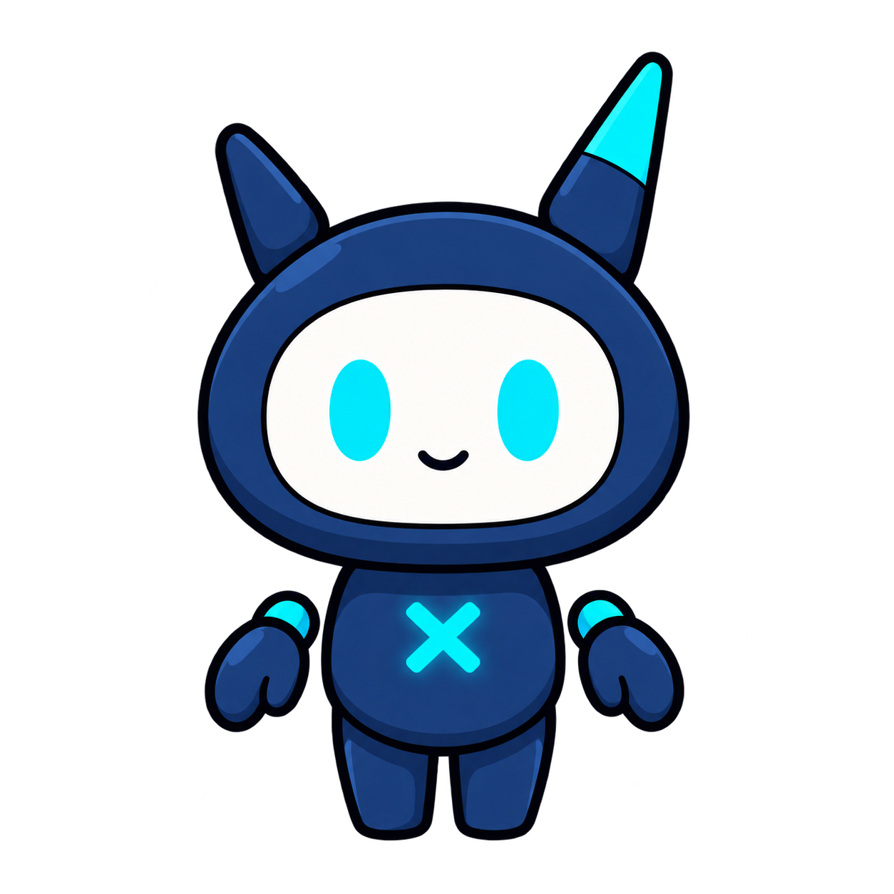

選択したマイクはこのブラウザに保存されます。
APIキーはサーバー側だけで管理され、ブラウザには表示されません。
OBSキャラ用: ?view=character&background=transparent
?view=character&background=transparent
OBS吹き出し用: ?view=bubble&background=transparent
?view=bubble&background=transparent
名前・役割・指示・AI・ワークスペースはxangi本体のAgent設定を使います。
サーバー側のNotion設定が必要です。画像を伴わない通常会話は記録しません。
Whisper / Piper / VOICEVOXのサーバー方式と、ブラウザ方式を選択できます。